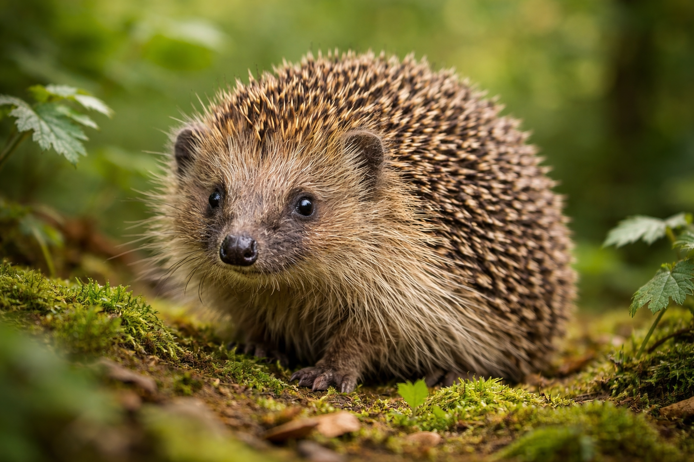

Hérisson d’Europe
Erinaceus europaeus
Famille : Erinaceidae
Ordre : Eulipotyphla
Taille : 20 à 30 cm
Poids : 600 à 1200 g (jusqu’à 2 kg avant hibernation)
Longévité : 3 à 5 ans en milieu naturel
Nombre de piquants : 5 000 à 7 000
Régime alimentaire : Insectivore opportuniste (coléoptères, vers, limaces)
Activité : Nocturne
Hibernation : Octobre à mars selon climat
Statut : Espèce protégée dans plusieurs pays européens